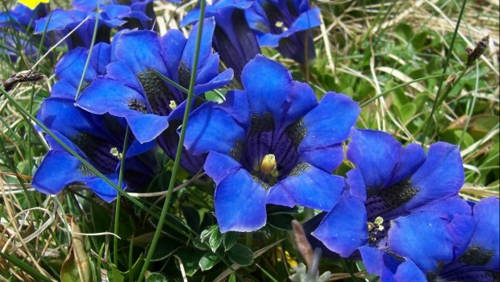
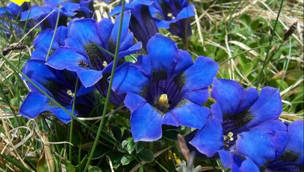

La fauna terrestre, así como las especies acuáticas y salvajes en todos sus grupos taxonómicos son parte del ambiente; sirviendo para generar lo que es la diversidad genética y relacionar los patrones naturales con la conservación del medio como un ciclo.
Tanto el clima, como los procesos ecológicos naturales dados en la fotosíntesis; la purificación natural de las aguas y la regeneración natural de los suelos, hacen que se dé un equilibrio completo en el medio ambiente, pues cada uno de los elementos que hacen parte del entorno, tienen una función específica a fin de crear un ecosistema apto para todos los seres vivos y las distintas especies que en él habitan.
Por supuesto, no se debe dejar de lado a la población más numerosa del medio ambiente, la especie humana quienes desde los tiempos de la creación se han establecido, habitándolo y teniéndolo para desarrollarse dentro de él.
 

Para evitar la destrucción del medio ambiente y la supervivencia de los seres vivos y desarrollo humano, es necesario tomar los recaudos necesarios. En primer lugar es necesario hacer un buen uso de los recursos naturales, no utilizaron de manera indiscriminada y realizar tareas sustentables.
Además es necesario fijar la atención en cuestiones como el cambio climático, la protección de la diversidad y población de flora y fauna, también a los bosques, y evitar la desertificación. Es también necesario tomar medidas frente al consumo y la producción.
Para llevar adelante la tarea de protección medioambiental es necesario que todos los actores de la sociedad tomen conciencia y se involucren, antes de que sea demasiado tarde. Esto hace referencia a que no solo desde los hogares y la vida cotidiana debemos llevar a cabo un cuidado del medio ambiente, sino que es necesario exigir a los estados y gobernantes que hagan lo mismo y lo promuevan, además de controlar el accionar de las industrias, empresas y de la comunidad científica.
La conservación medioambiental se da en base a tres ejes fundamentales de acción:
| Organización del espacio | Protección del patrimonio |
|---|---|
| Para que la explotación se dé en términos controlables y contemple diversas opciones de acceso a los recursos, para elegir la más adecuada. | Cada país posee un legado histórico, natural y cultural que forma parte de su identidad y de su propia existencia, el cual debe ser protegido de las manos rapaces. |
| Garantizar la base de producción | |
| Impedir el agotamiento o la malversación de recursos naturales no renovables, como el petróleo, de altísimo valor industrial pero enormes riesgos medioambientales durante su extracción y su transporte, para que la actividad económica pueda sostenerse. | |

"Enseñar y poner en práctica todas las acciones saludables será la clave para conservar un medio ambiente apto para todos."
- Margaret M.